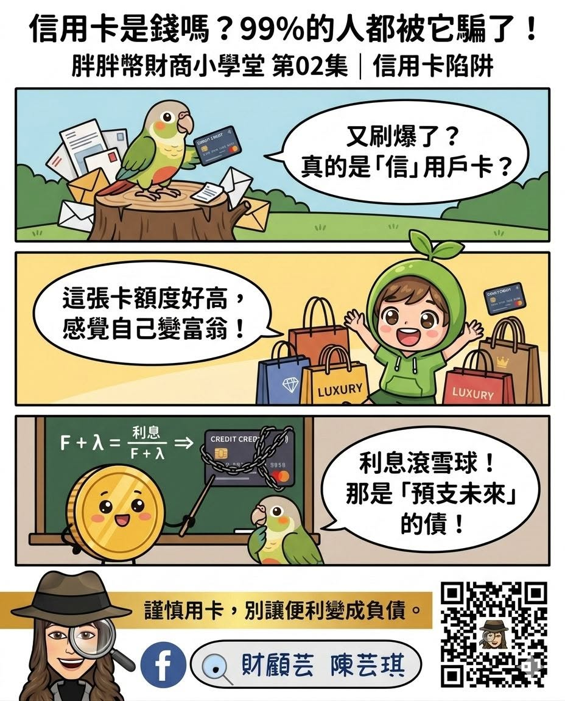
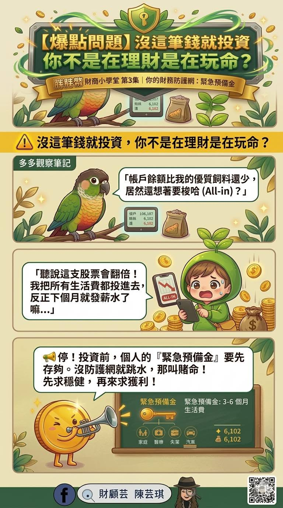
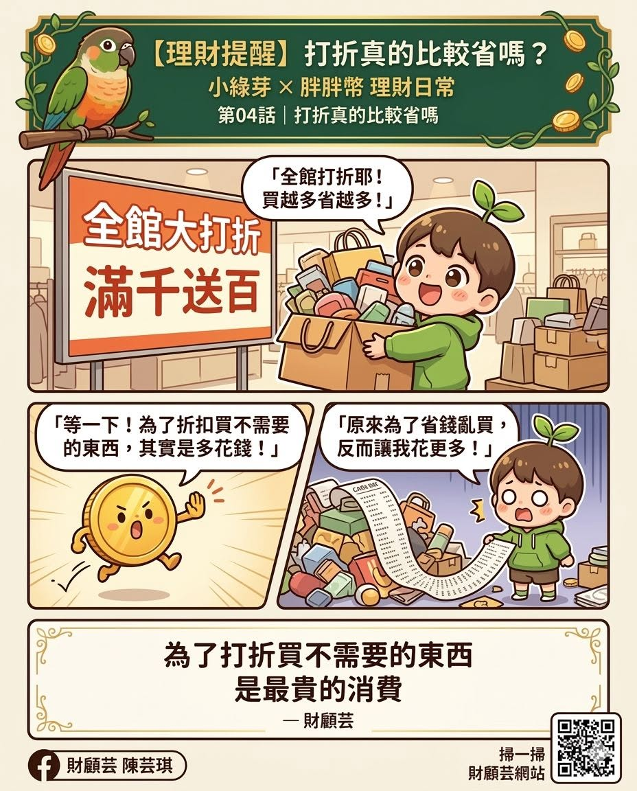
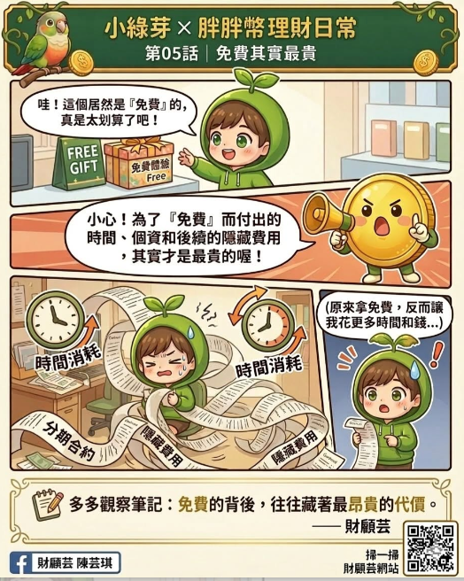
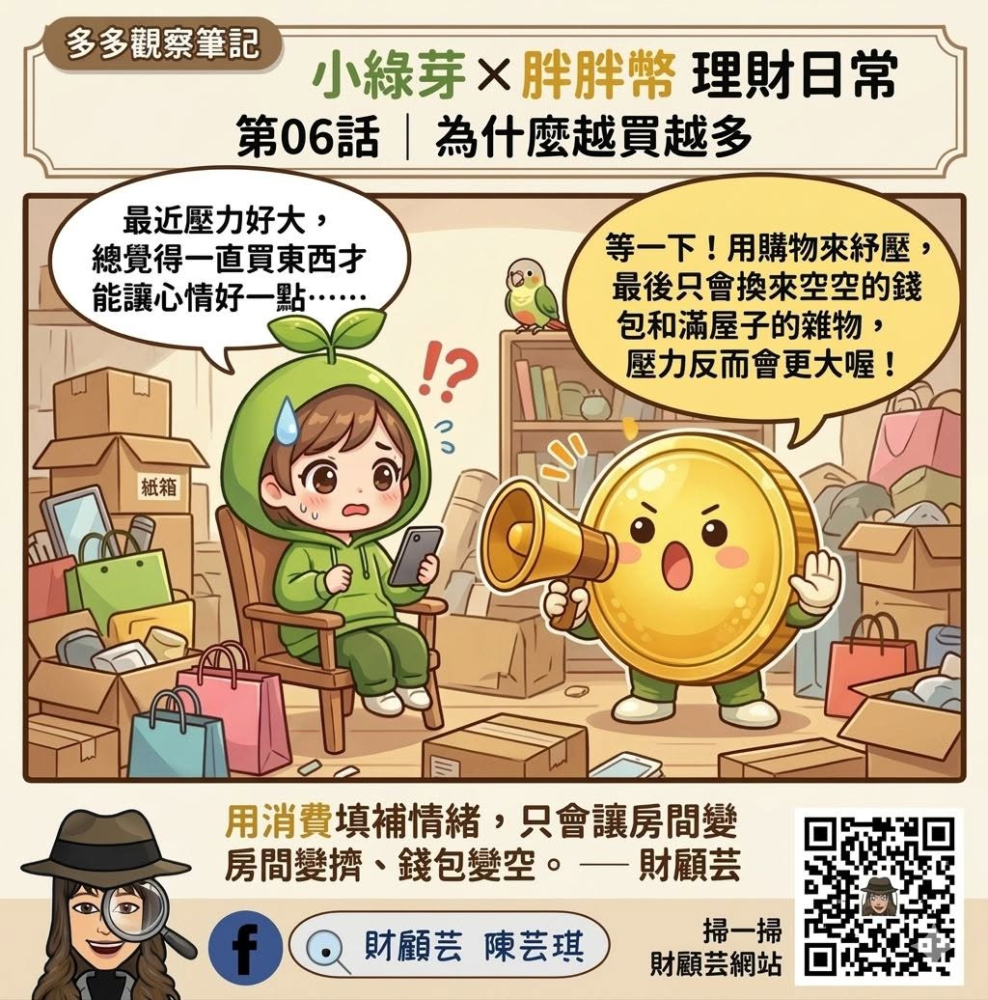
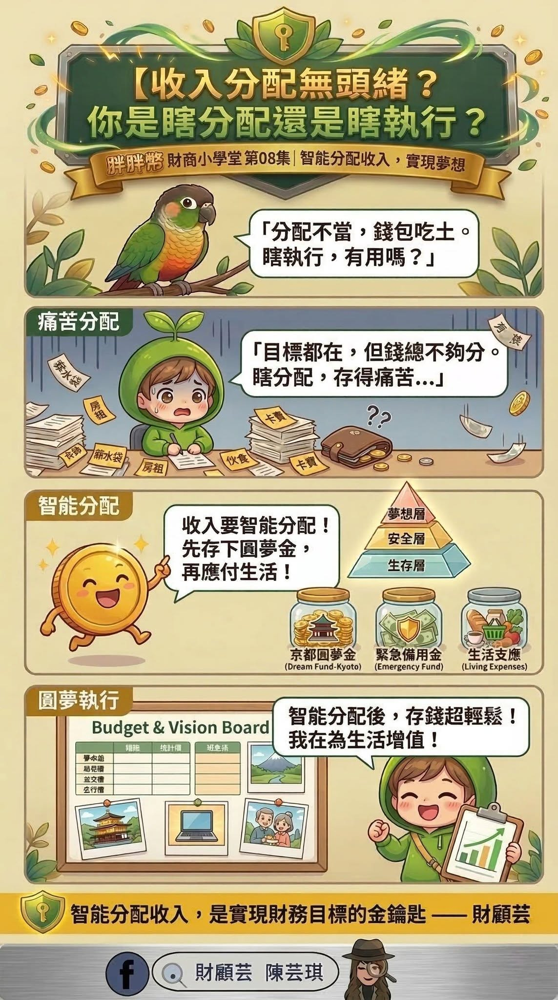
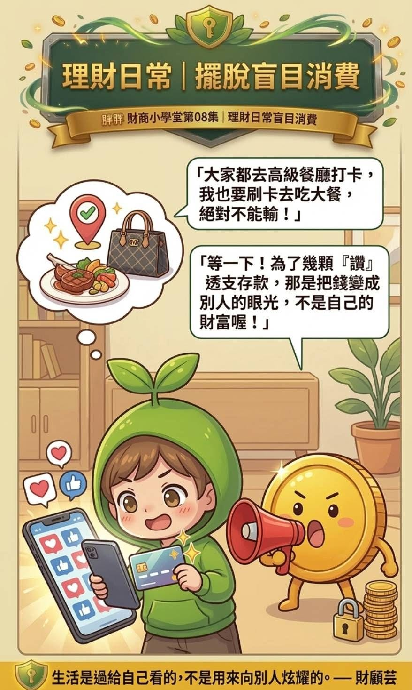
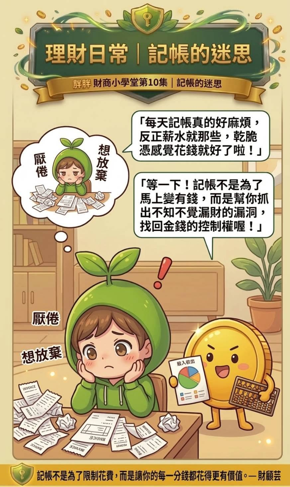
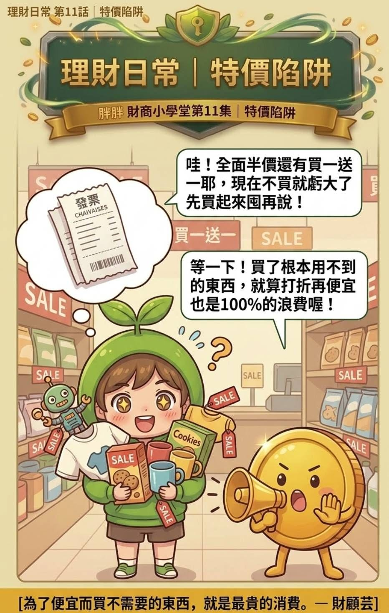

航道 III · 胖胖幣財商漫畫
跟著胖胖幣，
把理財變成看得懂的故事
通膨、儲蓄、複利、分配——用一則一則漫畫，把財商種進孩子（和大人）心裡。
＊胖胖幣同時是「人生金錢偵探社」的資產守護員。
漫畫單元
一則漫畫，一個觀念
從生活裡的小選擇，慢慢練習和金錢相處。

第一集 · 消費選擇
想要，還是需要？
先滿足生活的需要，再決定想要的東西值不值得帶回家。
閱讀第一集 →
第二集 · 信用卡
信用卡是錢嗎？
信用卡不是多出來的錢，而是把未來的收入提前拿來使用。
閱讀第二集 →
第三集 · 緊急預備金
投資前，先準備緊急預備金
先留好能接住生活意外的錢，再讓可以承擔波動的資金進入市場。
閱讀第三集 →
第四集 · 消費提醒
打折真的比較省嗎？
需要的東西，原價買也值得；不需要的東西，半價仍是浪費。
閱讀第四集 →
第五集 · 免費陷阱
免費，其實最貴
免費不一定不用付出；時間、個資、續約責任，也可能是看不見的代價。
閱讀第五集 →
第六集 · 情緒消費
為什麼越買越多？
先照顧心裡的疲累，再決定是否需要用購物換一點安慰。
閱讀第六集 →
第七集 · 財務目標
財務目標太模糊？
替目標寫下金額與期限，讓今天存下的錢開始走向想要的未來。
閱讀第七集 →
第八集 · 收入分配
薪水入帳，怎麼分才安心？
先照顧生活與安全，再替想完成的夢想留下固定的位置。
閱讀第八集 →
第八集延伸篇 · 盲目消費
花錢，是因為真的想要，還是不想輸？
生活是過給自己安心的，不必用消費向別人的眼光證明什麼。
閱讀延伸篇 →
第十集 · 記帳習慣
不必天天記到幾分幾毛
先用一週只記金額的小挑戰，看見錢花去哪裡，慢慢找回控制感。
閱讀第十集 →
第十一集 · 特價囤貨
特價囤貨，真的比較省嗎？
買一送一只有在真的用得完時才是優惠；用不到的半價商品，仍是完整的浪費。
閱讀第十一集 →
第十二集 · 緊急預備金
手機壞了，錢包準備好了嗎？
預備金像生活的雨傘，讓突發支出來臨時，不必立刻借錢或打亂重要計畫。
閱讀第十二集 →認識財顧芸
每一個理財故事，都從生活裡開始
胖胖幣與小綠芽，陪孩子在遊戲與對話裡，慢慢分辨想要和需要，也一起練習做選擇。
適合誰、怎麼用
最好的財商教育，從家裡開始
這些漫畫適合親子共讀，也可以搭配財商桌遊一起玩。讓孩子在故事裡，自然而然建立對錢的好感與好習慣。
- · 親子睡前共讀，一天一則
- · 搭配兒少財商桌遊延伸討論
- · 大人也適用：把觀念講給自己聽
讀完這片海域後
繼續探索，或回到四片海域選擇方向
每一片海域都從不同角度陪你整理生活與金錢。可以繼續往前，也可以回到全貌，選擇現在最想看的主題。